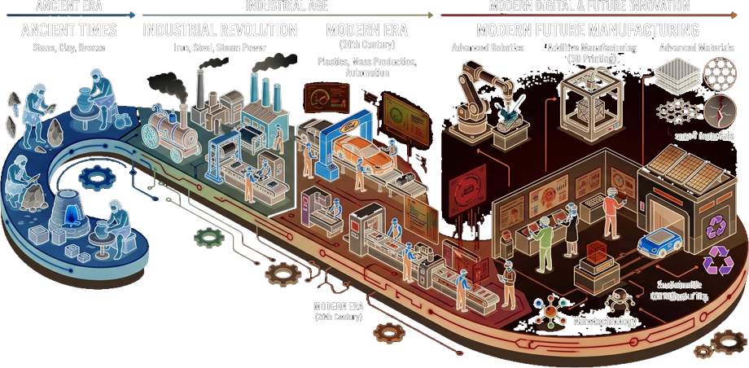

Kvarkeista tulevaisuuden värähtelytaajuuksiin — kattava katsaus kaikkeen, mistä maailma on tehty ja miten muotoilija hallitsee materiaalien logiikan osana suunnitteluprosessia.
Kaikki materiaali — kiridashi-veitsen teräs, HDPE-tonttikaivo, ihmisen luu — koostuu lopulta samoista kvarkki-elektroni-yhdistelmistä. Tämä on muotoilijan tiedostettava että osaa tehdä oikean perustellun valinnan.
Protonit ja neutronit koostuvat kolmesta kvarkista. Kvarkki on noin 10⁻¹⁸ m — miljoona kertaa pienempi kuin atomi. Niitä ei voida erottaa toisistaan (confinement). Linkit: Wikipedia: Kvarkki
Protoni (+) ja neutroni muodostavat ytimen, elektroni (-) kiertää ytimen ympärillä pilvikerroksissa — ei radoilla! Elektronien määrä = alkuaineen kemiallinen käyttäytyminen. Wikipedia: Atomi
Metallinen sidos: elektronimeri → johtavuus, muovattavuus. Kovalenttinen: jaetut elektronit → timantti, polymeerit. Ioninen: varausero → keramiikka, suola. van der Waals: heikko vetovoimia → grafiitti, muovikalvot. Perusvuorovaikutus
Millä tavoin atomit pakkautuvat toistensa viereen (BCC, FCC, HCP) — se määrää kiinteyden, sitkeyden, liukumispinnat, optisen käyttäytymisen. Lämpökäsittely muuttaa kiderakennetta → muuttaa ominaisuuksia. Faasimuutos
Jokaisella atomisidoksella on oma värähtelytaajuutensa — infrapunaspektroskooppi lukee tämän "allekirjoituksen" ja tunnistaa materiaalin. Tulevaisuudessa taajuuksien säätäminen tarkoittaa ominaisuuksien ohjaamista atomitasolta. Kvanttidot, metamateriaalit ja fotoninen kide — kaikki perustuvat tähän.
Jokainen alkuaine on paikallaan syystä — tiheys kasvaa alaspäin, reaktiivisuus vähenee oikealle, johtavuus kulkee ryhmän 11 kautta. Väri kertoo materiaalikategorian.
13,8 miljardia vuotta sitten tapahtui jotain — ja siitä kaikki materiaali on peräisin. Ihmiskunnan historia on suuressa mittakaavassa tarina siitä, miten olemme oppineet hallitsemaan materian rakenteita yhä hienosyisemmin.
Energia tiivistyi kvarkeiksi, kvarkit protoneiksi ja neutroneiksi. 380 000 v. myöhemmin ensimmäiset atomit: vety (H) ja helium (He). Litiumia hieman. Kaikki muu syntyi myöhemmin tähdissä.
Tähtifuusio "poltaa" vetyä heliumiksi → hiileksi → hapeksi → raudaksi. Supernovissa syntyy raskaita alkuaineita kultaan (Au) ja uraaniin (U) saakka. Me olemme kirjaimellisesti tähtien tuhkaa.
Homo habilis muovasi ensimmäiset kiviesineet. Litteä sirpale + teräväksi lyötty reuna = ensimmäinen materiaalinen suunnittelupäätös. Pii (Si) hallitsi maailmaa.
Puu, nahka, luu, kasvikuidut, kasvikumi. Kaikki C-H-O-N -pohjaisia. Ihminen oppi hallitsemaan tulta → biomateriaalien muokkaus kuumentamalla (keramiikka, lasi).
Metallien tarina alkoi kuparista, siirtyi pronssiin (Cu+Sn seoksen voima) ja kulminoitui rautakaudella. Jokainen siirtymä mursi valtarakenteita — paremman metallin hallitsijakansa voitti.
Intian wootz-teräs, Japanin tamahagane — käsityöläiset hallitsivat hiilen ja raudan yhdistelmää intuitiivisesti vuosisatoja ennen kuin metallurgia tieteenä syntyi. Damaskoksen teräs on nanoteknologiaa ennen nanoa.
Goodyear vulkanoi kumin (1839), Baekeland syntetisoi bakeliittia (1907), Bessemer mullisti teräksentuotannon. DuPont kehitti nylonin (1935). Polttomoottori, sähkö ja teollisuus yhdistyivät — materiaalituotanto skaalautui sadoista tuhansista miljardeihin.
PE, PP, PET, ABS, PC — muovi mahdollisti muodon vapauden. Eamesin tuoli, Aarnion pallotooli, Tupperware. Hinta romahti, kulutus räjähti. Tyynenmeren muoviläjä löydettiin 1997.
Lineaarinen talous osoittautui kestämättömäksi. Mikromuovit ihmisen veressä, ilmastokriisi, kriittisten raaka-aineiden ehtymisuhat. Kiertotalous ei ole vaihtoehto — se on välttämättömyys.
AI suunnittelee polymeerit molekyylitasolta, 4D-tulostus luo muotoaan muuttavia rakenteita, kvanttimateriaaleissa taajuus on muoto. Avaruuslouhinta alkaa. Fusioreaktori muuttaa energiamatriisin.
| Aikakausi | Hallitseva materiaali | Muotoilun fokus |
|---|---|---|
| Esihistoria | KiviPuuLuu | Selviytyminen, perustyökalut |
| Kivikaudesta rautakauteen | SaviKupariPronssi | Aseistus, maatalous, kaupankäynti |
| Rautakausi—1800-luku | RautaTeräsPuu | Rakentaminen, koneet, laivanrakennus |
| Teoll. vallankumous | TeräsValurautaBetoni | Massatuotanto, mekaniikka |
| 1950–1990 | PE, PP, ABSAl | Muodon vapaus, halvat kulutustuotteet |
| 1990–2020 | KomposiititTekniset muovit | Suorituskyky, digitalisaatio |
| 2020 → | BiopohjaisetÄlykäät | Vastuullisuus, elinkaari, kierto |
Aineet joilla suuri taloudellinen merkitys mutta saatavuusriski. Teollisen muotoilijan on tunnettava nämä.
Ihminen käyttää kuutta suurta materiaalikategoriaa — ja niiden yhdistelmiä. Jokainen kategoria on oma maailmansa, omine fysikaalisine lakineen.
Kiderakenteinen, johtava, muovattava. BCC/FCC/HCP-hila. Lämpökäsittely muuttaa ominaisuuksia. Fe, Al, Cu, Ti, Ni ja 80+ muuta.
Hiiliketjut — termoplastit, termosetit, elastomeerit. 50 000+ laadut. Keveys + muodon vapaus. Elintarvikkeista avaruuteen.
Silikaattipohjaiset — kivi, hiekka, savi, keramiikka, lasi, betoni, kipsi. Ionisidokset → kova, hauras. Paloturvalliset, kestävät ikuisuuteen.
Elävästä luonnosta — puu, bambu, nahka, korkki, kuidut, villa, silkki, sienet, luonnonkumi. Uusiutuvat mutta "elävät" — kosteusmuutokset, vanheneminen.
Kahden tai useamman materiaalin yhdistelmä — ominaisuuksia, joita kumpikaan ei yksin saavuta. Hiilikuitu, lasikuitu, teräsbetoni, vaneri.
Reagoivat ympäristöön — muistimetallit (NiTi), pietsosähköiset, termoklroomiset, grafeeni, metamateriaalit, biohajoavat implantit, johtavat polymeerit.
Metallin "elektronimeri" tekee siitä johtavan, muovattavan ja kierrätettävän. Ei muuta materiaaliryhmää voi sulattaa ja muovata uudelleen lähes loputtomasti laadun laskematta.
Al, Mg, Ti, Li — jaksollisen järjestelmän yläosa. Matala tiheys mutta riittävä lujuus. Lentokone, autonrunko, elektroniikka, akut.
Fe + C (0,05–2,1%) = teräs. Kiderakennetta hallitaan lämpökäsittelyllä — martensiitti, perliitti, baniitti, ferriitti. HRC 20–65. → Syvennys: Kiridashi
Cu — paras johtavuus käytännössä. Ag parempi mutta kallis. Au korroosionkestävin. Pt katalyysit ja lääketiede. Kaikki louhittavissa avaruudesta.
Tiivistää kiderakennetta, poistaa huokosia. Kiridashi-veitsessä chisel grind muotoillaan taonnalla. Kuviotaonta, vapaa taonta, matriisitaonta.
Sula metalli muottiin. Hiekkavalu yksittäisosiin, painevalu (HPDC) miljooniin alumiiniosiin. Toleranssit heikommat kuin koneistuksessa.
Sorvaus, jyrsintä, poraus, hionta. Äärimmäinen tarkkuus (±0,01 mm). Kallis yksittäisosiin, taloudellinen sarjoissa. Lastuamisgeometria ratkaisee. Sandvik Coromant →
Syväveto, särmäys, laajennus, reunataivutus. Ohutlevyrakenteet kodinkoneet, autokori, kotelot. Minimimitoitus: materiaalin taivutussäde × materiaalipaksuus.
Kiinteä liitos — suunnittele niin ettei hitsausta tarvita (painevalu). Kun tarvitaan: laserliitos minimoi lämpövyöhykkeen. Korkeahiilinen teräs haastavaa.
Anodisointi (Al) antaa värin + korroosiosuojan. Pulverimaalaus kestävin maalikerroin. PVD-pinnoitus kovuus + estetiikka. Muotoilija valitsee viimeistelyn osana konseptia.
Muovi antoi muotoilulle jotain ennenkuulumatonta: materiaalin, joka palvelee muotoa eikä pakota muodon palvelemaan materiaalia. Ja samalla se loi planeetan suurimman jätekriisin.
PE, PP, PET, PVC, PS — yli 90 % maailman muovituotannosta. Alhaisin hinta, suurin ympäristöpaine. Pakkaukset, putket, kalvot.
ABS, PA (nylon), PC, POM, PMMA — paremmat mekaaniset ja termiset ominaisuudet. Elektroniikka, autoteollisuus, urheilu.
PEEK, PTFE (Teflon), PEI, PAI — äärimmäinen lämpö- ja kemikaalienkestävyys. Lentokone, lääketiede, puolijohteet. Hinta 100–1000 €/kg.
BPA (polykarbonaatissa), ftalaatit (PVC:ssä), bromatut palonestoaineet — kaikki häiritsevät hormonijärjestelmää. Muotoilija vaatii food-grade tai medical-grade sertifikaatit ja tuntee REACH-asetuksen rajoitukset.
Massatuotanto monimutkaisiin muotoihin. Syklinaika 15–60 s. Päästökulmat, seinämänvahvuuden tasaisuus, kutistuma — muotoilijan kolme kriittistä parametriä. Video →
Levymäiset osat lämmön ja alipaineen avulla. Halvemmat työkalut, rajoitetummat muodot — ei umpiomuotoja. Video →
Jatkuva prosessi — putket, profiilit, kalvot, langat. Nopea, taloudellinen, tasalaatuinen. Video →
Pullot, säiliöt — esimuovaus + ilmanpuhallus muottiin. PET-pullot maailman yleisin muoviosa. Video →
Suuret onttot osat (tonttikaivot, tankki, leikkimökki) ilman hitsaussaumoja. Video →
Silikaatit, oksiidit, karbonaatit — Maan kuori on 46 % happea ja 28 % piitä. Keramiikka, lasi ja betoni ovat ihmiskunnan vanhimmat ja nykyisin määrällisesti suurimmat materiaalit.
Al₂O₃·SiO₂·H₂O — vesipitoinen alumiinisilikaatti. Polttolämpötila määrittää laadun: 800°C = punasavi, 1200°C = kivitavara, 1400°C = posliini. Airihortling.fi →
SiO₂ + Na₂O + CaO — sulatettu ja nopeatijäähdytetty silikaatti. Ei kiderakennetta = amorfinen. Float-lasi, karkaistu lasi, laminoitu lasi, optinen lasi. Video: Lasi →
Sementti + vesi + kiviaines + runkoaine. Betonin tuotanto vastaa ~8 % CO₂-päästöistä. Uudet geopolymeerikomposiitit korvaavat sementin. Video →
Graniitti, marmori, liuskekivi, talkki, jalokivet. Kestävyys vuosituhansia — hiilijalanjälki lähinnä kuljetuksesta. Tekninen keramiikka (SiC, Al₂O₃) korvaa metallit ääriolosuhteissa.
Lasi on ainoa laajamittainen amorfinen epäorgaaninen materiaali — ei kiteistu jäähtyessään. Tämä tekee siitä optisesti kirkkaan ja isotrooppisen (samat ominaisuudet kaikkiin suuntiin).
Puhdas Al₂O₃ (alumiinioksidi), SiC (piikarbidi), Si₃N₄ (piinitiridi) — kovaadamanttiset, lämpöä kestävät, sähköä eristävät. Käyttö avaruustekniikassa, leikkaavissa työkaluissa, hammasimplanteissa ja vesisuodatuksessa. Ceramic nanoparticles →
3,8 miljardia vuotta evoluutiota on optimoinut orgaaniset materiaalit tehtäviinsä. Siidenperhosen silkki on grammakohtaisesti lujempi kuin kevlar. Äyriäisten panssari yhdistää kovuuden ja sitkeyden tavalla, jota emme osaa vielä kopioida.
| Materiaali | Erityisyys |
|---|---|
| Puu | Luonnonkomposiitti: selluloosa + ligniini. Anisotrooppinen — syysuunta ratkaisee. propuu.fi |
| Bambu | Maailman nopeimmin kasvava materiaali. Lujuus/paino lähellä terästä. Onttoja rakenteita. |
| Korkki | Pentagonaaliset solut — paras iskunvaimennus, eriste, vedenpitävä. Eivät saa kaataa puuta — pelkkä kuori. |
| Hamppu | Nopeimmin kasvava kuitu. Biokomposiiteissa korvaa lasikuitua. CO₂-nielu kasvaessa. |
| Nokkonen | Pitkä historinen tekstiilikuitu. Uudelleen muodissa — Suomessa yrityksiä. |
| Sisal & juutti | Komposiittien luonnonkuituvahvistukset. Biohajoavat, uusiutuvat, edulliset. |
| Materiaali | Erityisyys |
|---|---|
| Silkki | Fibroiini-proteiini. Kimmoisuus + pehmeys + kiilto. Äyriäisproteiineja etsitään teolliseen synteesiin. |
| Villa | Keratiini + hilsemäinen pinta. Luonnonlämmönsääntelijä, palaa ilman liekiä. Merino — tasaisimmat kuidut. |
| Nahka | Kollaageeniverkosto — parkitus säilyttää rakenteen. Kasviparkitus vs. kromiparkitus: ympäristöero valtava. |
| Luonnonkumi | Polyisopreeni Hevea brasiliensis -puusta. Vulkanointi (S-ristisidokset) teki siitä käytännöllisen. |
| Luu & sarvi | Luonnonkomposiitti: kollageeni + hydroksiapatitti. Ortopedisten implanttien esikuva. |
Sienirihmasto kasvaa maatalousjätteen ympärille — muodostaa vaahtomaisen, biohajoavan rakenteen. Ecovative (USA) valmistaa jo pakkausvaahtoa ja tekstiilejä. 100 % kompostoituva.
Luonnon polymeerit joita käytetty pintakäsittelyyn vuosituhansia. Shellakka, kopal, mehiläisvaha — korvaamassa öljypohjaisia pintakäsittelyjä.
Luonto keksi komposiitin miljardeja vuosia ennen ihmistä — puu on selluloosakuitujen (kova, hauras) ja ligniinin (pehmeä, sitkeä) komposiitti. Sama periaate toistuu hiilikuitukomposiiteissa ja teräsbetonissa.
Hiilikuitu + epoksimatriisi. Lujuus-paino-suhde 5× parempi kuin teräksellä. Lentokone (Boeing 787: 50 % CFRP), urheiluvälineet, Formula 1. Haitta: ei mekaanisesti kierrätettävissä helposti — kemiallinen kierrätys kehitteillä.
Lasifilamentit + polyesteri/epoksi. Edullisempi kuin hiilikuitu. Veneet, tuulivoimalat, kaitoteet, kylpyammeet. Lasikuitupyörillä kierrätysongelma — 2030 mennessä EU vaatii ratkaisun.
Para-aramiidi-kuitu. Luotisuoja, viiltosuoja, lentokonerakenteet. 5× lujempi kuin teräs painoyksikköä kohti. Ei sula — suojaa kuumuudelta. Dyneema (UHMWPE) kilpailija.
Betoni: hyvä puristuskesto, huono vetolujuus. Teräs: hyvä vetolujuus. Yhdistelmä kattaa molemmat. Raudoitettu betoni = 1800-luvun johtava keksintö. Karbonivahvistettu betoni — 10× lujempi, ohuempi.
Hamppu, sisal, pellava + biohartsi → biokomposiitti. Kierrätettävä, uusiutuva, lähes sama jäykkyys kuin lasikuidulla tietyin sovellusin. Automobiliteollisuus (Mercedes sisäosat) jo käyttää.
Ohuet lujat pinnat + kevyt sydän (kennolevy, vaahto). Maksimijäykkyys minimipainolla. Lentokoneen lattia, purjeveneen kansi, seinäelementit. Muotoilu: liitoskohdat aina kriittisiä.
Valmistusmenetelmä ei ole vain tapa tehdä tuote — se on raami, jonka sisällä muoto on mahdollinen. Muotoilija, joka ei tunne valmistusta, suunnittelee tuotteita jotka ovat mahdottomia tai tarpeettoman kalliita valmistaa.
Monimutkaiset muodot, tarkka toistettavuus. Muotti kallis (10 000–200 000 €). Suunnitteluvaateet: päästökulmat min 1°, tasainen seinämä, välty teräviltä sisäkulmilta.
Yksinkertaisemmat muodot — ei umpinaisia onkaloita. Halvat työkalut (5 000–30 000 €). Pakkausvadnat, kylpyammeet, kotelot. Video →
Ei muottia — kerros kerrokselta. Monimutkaiset geometriat, jotka ovat muilla menetelmillä mahdottomia. Prototyyppi → pienisarjatuotanto → massaräätälöinti.
Jatkuva prosessi profiileille, putkille, kalvoille. Nopea, kustannustehokas. Poikkileikkaus vakio koko pituudella — ei 3D-muotoja. Video →
Hiekkavalu, painevalu, vahavalumenetelmä (investointivalu). Monimutkaiset 3D-muodot mahdollisia. Toleranssit heikommat kuin koneistuksessa.
Käsin tai koneellisesti — kuitujen suunta ratkaisee lujuussuunnan. Autoklaavi kovettaa. Hidas, kallis, äärimmäinen tulos — veneet, lentokoneet. Video →
Maalaus, anodisointi, galvanointi, PVD, teksturointi, lasiaaminen, parkitus. Muotoilija valitsee tuntuman, kestävyyden ja estetiikan yhdistelmänä — ei pelkkänä viimeistelyinä.
Jauhemainen raaka-aine puristetaan ja sintataan — hiukkaset liittyvät yhteen ilman sulattamista. Hammastekniikka, elektroniikka, avaruustekniikka.
Eamesin muotolautanen — vaneri höyryn ja puristimen avulla. Akryyli lämpötaivutus linjataivuttimella. Metallilevyn syväveto. Jokainen materiaali omalla taivutussäteellään.
Ota — tee — heitä pois. Tämä malli on historiaa. Kiertotalous ei ole romanttinen ajatus — se on teollinen välttämättömyys, kun fossiiliset raaka-aineet ehtyvät ja ympäristön kantokyky ylitetään.
Metallit ovat ikuisesti kierrätettäviä laadun laskematta. Magneetti erottaa raudan — kierrätysaste jopa 80–90 %. Alumiini vaatii vain 5 % virgiinimateriaalin tuotantoenergiasta.
Muovin kierrätys on kompleksista — vain puhtaat homogeeniset jakeet soveltuvat mekaaniseen kierrätykseen. Monikerrakset, lisäaineet ja kontaminaatio heikentävät laadun.
Pyrolyysi, glykolyysi, entsymaattinen hydrolyysi — muovi takaisin monomeeriksi. Loop Industries, Carbios, Plastic Energy skaalautuvat. Mahdollistaa kierrätysmuovin käytön vaativimpiin kohteisiin.
Puu kompostoituu, keramiikka on käytännössä ikuista, lasi kierrätyy sulattamalla täydellisesti, betoni voidaan murskata ja käyttää uudelleen (downcycling kiviainekseksi).
Ei tuoteta turhia materiaaleja lainkaan.
Optimoi seinämänpaksuus, kevennä, minimointi.
Modular design, täytettävät pakkaukset.
Vasta viimeisenä — materiaali alasluokittuu.
Golf-virta kuljettaa lämmintä Atlantin vettä Pohjois-Eurooppaan — ilman sitä Suomen keskilämpötila voisi laskea 5–10 °C. Ilmastonmuutos hidastaa virtaa. Tämä on materiaalitieteen ongelma yhtä paljon kuin ilmasto-ongelma.
Golf-virta on osa AMOC-virtausjärjestelmää (Atlantic Meridional Overturning Circulation). Suolaisuuserojen ja lämpötilaerojen ajama.
Ilmastonmuutos häiritsee tätä: Grönlannin jäätiköt sulavat → makeaa vettä Atlantille → suolaisuus laskee → virtaus hidastuu. AMOC on heikentynyt ~15 % teollisesta ajasta.
Materiaaliyhteys: Kasvihuonekaasupäästöt = fossiilisten polttoaineiden poltto = hiilipohjaisten materiaalien polttaminen. Muovien ja metallien lineaarinen talous on suoraan osa tätä ketjua.
Kiertotalous on päävirta. Biomuovit korvaavat 60 % fossiilipohjaisista. Vihreä teräs ja vetypelkistys yleistyvät. AMOC hidastuu mutta ei pysähdy. Suomen olosuhteet muuttuvat mutta pysyvät asuttavina.
Päästöt kasvavat. AMOC hidastuu kriittisesti. Suomi kylmenee, Sahel kuivuu, merenpinta nousee. Materiaalikriisi: kriittiset raaka-aineet loppuvat tai geopoliittisesti saavuttamattomia.
Fuusioreaktori ratkaisee energian. Avaruuslouhinta tuo kriittiset raaka-aineet. AI suunnittelee materiaalit atomitasolta. Biologiset materiaalit korvaavat synteettisiä. Maapallon tila palautuu.
Jokainen materiaalivalinta on ääni skenaariossa. Pitkäikäinen tuote < lyhytikäinen. Kierrätettävä < sekajäte. Biomaalerial < fossiilinen. Muotoilija on aikamme tärkein materiaalipäätösten tekijä.
Tulevaisuuden materiaali ei ole vain kemiallinen yhdiste — se on ohjelmoitu järjestelmä, jonka ominaisuudet voidaan asettaa ja muuttaa. Taajuuksien säätäminen on seuraava materiaalivallankumous.
IR-spektroskopia tunnistaa materiaalin sidostyypit → AI analysoi → materiaali identifioitu. Tulevaisuudessa: säätämällä taajuudet → säädetään ominaisuudet.
Keinotekoiset mikrorakenteet joilla luonnossa esiintymättömiä optisia tai akustisia ominaisuuksia. Negatiivinen taitekerroin → "näkymättömyysviitat". Akustiset metamateriaalit absorboivat täsmätaajuuksia.
Puolijohdepartikkelit joiden koko määrää emittoitavan valon aallonpituuden — kvanttimekaniikka värjäyksenä. QLED-näytöt. Lääketiede: biomarkkerit, syöpädiagnostiikka.
Yksi hiiliatomikerros — kovempi kuin timantti, johtaa paremmin kuin kupari, läpinäkyvä. Nobel 2010. Haaste: massakaupallinen tuotanto. MoS₂, borofeen — seuraavat 2D-materiaalit.
AlphaFold ratkaisi proteiinirakenteet — sama lähestymistapa polymeereihin. Materials Project: 150 000 materiaalin laskelmat. Uuden materiaalin kehitys vuosista viikoihin.
3D-tulostettu rakenne muuttaa muotoaan ajan myötä lämmöstä, kosteudesta tai valosta. Itsekokoontuva teollisuus, adaptiiviset implanttit, vaatteet jotka sopeutuvat kehoon.
Hämähäkin siidistä kaupallista tuotantoa (Bolt Threads). Bakteerikasvuinen myseelipakkaus (Ecovative). Algatuotanto: hiilineutraalit biomuovit levistä. Synteettinen biologia materiaaliteollisuutena.
PEDOT:PSS, polyaniline — muovi joka johtaa sähköä. Nobel-kemia 2000. Orgaaniset aurinkokennot, OLED, taipuisat elektroniikka, biolääketieteelliset sensorit kehossa.
AstroForge (USA) 2023: ensimmäinen asteroidilouhinnan demonstraatio. He-3 Kuusta fuusiopolttoaineeksi. Rautanikkeliasteroidi 500 m = kaikki teräs mitä maapallo on tuottanut.
Japanilainen perinneveitsi avaa metallurgian — kiderakenteista lämpökäsittelyyn, teroitukseen ja historiaan. 9 osiota, interaktiivinen.
→Tonttikaivosta vaateteollisuuteen — polymeerien historia, termistö, 4 sovellustapauksta, kierrätys ja tulevaisuus. 9 osiota.
Juomalasi (Nuutajärvi), salaatinotin (metalli), keraaminen muki ja lautanen. Palauta Google Classroomiin. Kiridashi-veitsi valinnaisena syventävänä harjoitustyönä.